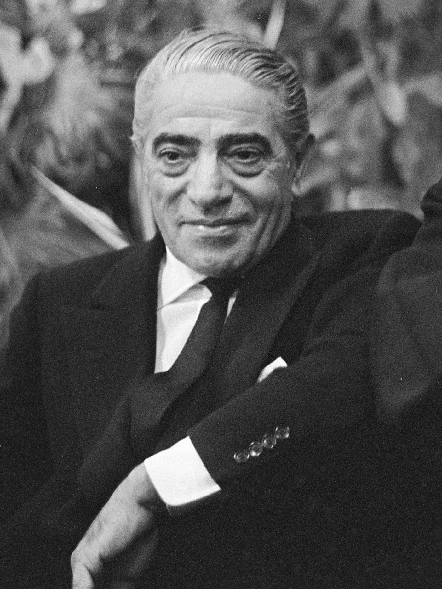

One of the richest people in the 20th century
Aristotle Socrates Onassis(Greek: Αριστοτέλης Ωνάσης, Aristotélis Onásis; 20 January 1906 - 15 March 1975),[1] commonly called Ari or Aristo Onassis, was a Greek-Argentine shipping magnate, who amassed the world's largest privately owned shipping fleet and was one of the world's richest and most famous men.

The most well-Known portrait of Onassis.